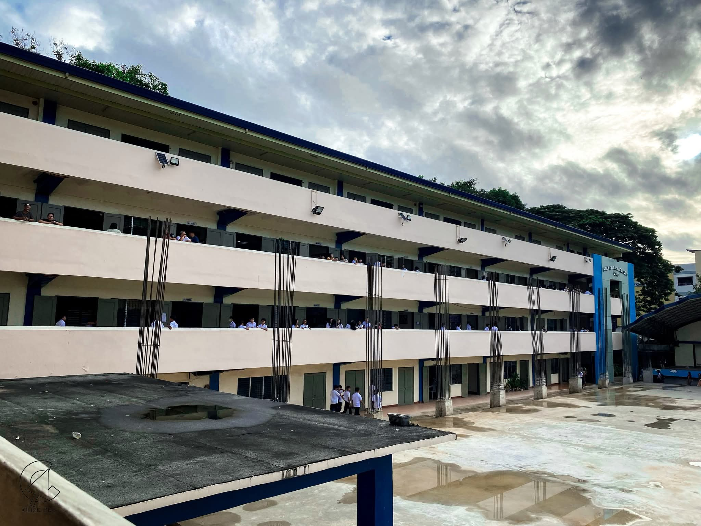

I study at HOLY CHILD ACADEMY. It is a place where I learn many important subjects like ICT, Mathematics, English, and Science. The school teaches us not only academics but also values such as discipline, responsibility, and teamwork.
During my time at school, I have learned how to create websites, understand how computers work, and use technology in practical ways. I also participate in class discussions, group activities, and school projects that improve my problem-solving and communication skills.
Through different lessons, I have gained confidence in presenting my ideas, managing tasks, and collaborating with classmates. I also enjoy learning new things that challenge me and help me grow both academically and personally.
School has taught me the importance of perseverance, curiosity, and continuous learning. Every day is an opportunity to improve my knowledge and skills.